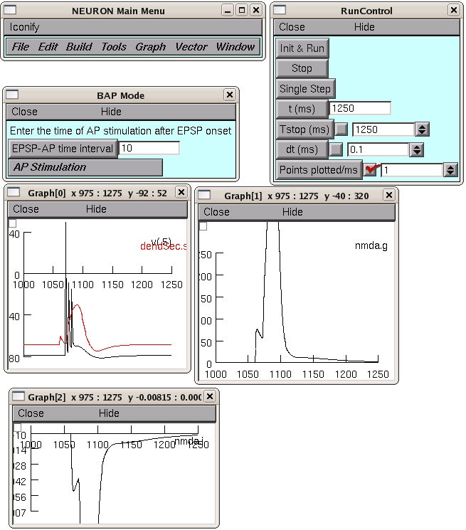

This is the readme for the model published in Letzkus, Kampa & Stuart (2006) Learning Rules for Spike Timing-Dependent Plasticity Depend on Dendritic Synapse Location. J Neurosci 26(41):10420-9. The simulation creates several plots showing voltage and NMDA current and conductance changes at different apical dendritic locations in layer 5 pyramidal neurons during STDP induction protocols. Usage: Autolaunch from ModelDB **or** download and extract the archive and then compile the mod files in the mod directory and run under ... linux/unix ---------- by typing nrnivmodl mod in the top level directory. Then type nrngui mosinit.hoc mswin ------- by running mknrndll, cd'ing to the mod directory and press make nrnmech.dll button. Copy the nrnmech.dll file to the parent directory of the mod folder (the top-level directory). Double click on the mosinit.hoc file. MAC OS X -------- drag and drop the mod folder onto mknrndll icon in the NEURON application folder. Start a terminal window, cd to the directory within the expanded archive and type mod/powerpc/special mosinit.hoc - to start the simulation. ------- Choose a pre-post interval (default +10 ms, i.e. post- synaptic action potentials occur 10 ms after presynaptic EPSP stimulation). Dendritic locations are 200 microns (proximal) or 800 microns (distal) from soma as shown in figure 8 in Letzkus (2006). Running the model in the default configuration should lead to:  created by B. Kampa (2006) kampa@hifo.uzh.ch 20110406 mod/cad.mod integration method changed to derivimplicit as suggested by Ted: http://www.neuron.yale.edu/phpBB/viewtopic.php?f=28&t=592